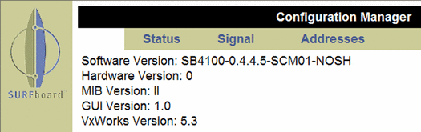

Figure 2:
The modem's help screen shows that it's running Version 5.3 of the VxWorks real-time operating system. Yes, indeed, inside that small beige box with the blinking LEDs lurks a no-holds-barred RTOS!
Back to Article